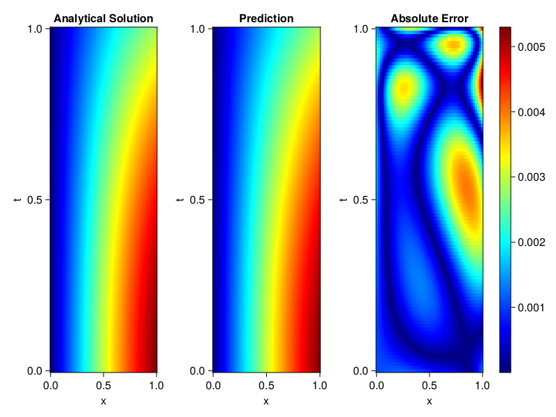
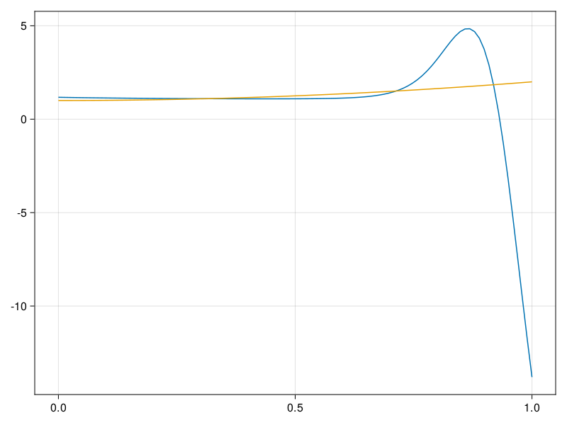

Inverse problem for the wave equation with unknown velocity field
We are going to sovle the wave equation.
using Sophon, ModelingToolkit, IntervalSets
using Optimization, OptimizationOptimJL
@parameters x, t
@variables u(..), c(..)
Dₜ = Differential(t)
Dₜ² = Differential(t)^2
Dₓ² = Differential(x)^2
s(x,t) = abs2(x) * sin(x) * cos(t)
eq = Dₜ²(u(x,t)) ~ c(x) * Dₓ²(u(x,t)) + s(x,t)
bcs = [u(x, 0) ~ sin(x),
Dₜ(u(x, 0)) ~ 0,
u(0, t) ~ 0,
u(1, t) ~ sin(1) * cos(t)]
domains = [t ∈ Interval(0.0, 1.0),
x ∈ Interval(0.0, 1.0)]
@named wave = PDESystem(eq, bcs, domains, [t,x], [u(x,t),c(x)])\[ \begin{align} \frac{\mathrm{d}}{\mathrm{d}t} \frac{\mathrm{d}}{\mathrm{d}t} u\left( x, t \right) =& c\left( x \right) \frac{\mathrm{d}}{\mathrm{d}x} \frac{\mathrm{d}}{\mathrm{d}x} u\left( x, t \right) + \cos\left( t \right) \left|x\right|^{2} \sin\left( x \right) \end{align} \]
Here the velocity field $c(x)$ is unknown, we will approximate it with a neural network.
pinn = PINN(u = FullyConnected((2,16,16,16,1), sin),
c = FullyConnected((1,16,16,1), tanh))
sampler = QuasiRandomSampler(500,100)
strategy = NonAdaptiveTraining(1, (10,10,1,1))NonAdaptiveTraining{Int64, NTuple{4, Int64}}(1, (10, 10, 1, 1))Next we generate some data of $u(x,t)$. Here we place two sensors at $x=0.1$ and $x=0.5$.
ū(x,t) = sin(x) * cos(t)
x_data = hcat(fill(0.1, 1, 50), fill(0.5, 1, 50))
t_data = repeat(range(0.0, 1.0, length = 50),2)'
input_data = [x_data; t_data]
u_data = ū.(x_data, t_data)1×100 Matrix{Float64}:
0.0998334 0.0998126 0.0997503 0.0996464 … 0.275281 0.267213 0.259035Finally we construct the inverse problem and solve it.
additional_loss(phi, θ) = sum(abs2, phi.u(input_data, θ.u) .- u_data)
prob = Sophon.discretize(wave, pinn, sampler, strategy; additional_loss=additional_loss)
@time res = Optimization.solve(prob, BFGS(), maxiters=1000)u: ComponentVector{Float64}(u = (layer_1 = (weight = [-0.3506519863763786 0.3677275835262753; -0.02689728773662056 -0.7283454252469252; … ; 0.31429367503865385 -1.4476537844147308; -0.05463558185208483 2.1771386796959895], bias = [-0.008572622360894212; 0.1352461720833294; … ; -0.8237394316714955; -2.5156835797231962;;]), layer_2 = (weight = [0.05066565277014543 0.07736657247336733 … -0.004765646609517998 -0.2093843214349127; -0.18916329073346808 -0.062307497007912147 … -0.9013069294826453 0.2752383586407546; … ; 0.5873636296307353 -0.12960773678666643 … 0.0415727437715307 0.22168696693519685; 0.10620634690809685 0.3809974754801792 … 0.33289328021550546 1.4894442765292337], bias = [0.6855555213651321; -0.10104052315310129; … ; -0.23508792088235436; 1.0755790397089253;;]), layer_3 = (weight = [-0.18899738692863227 0.10171156077980716 … -0.2552633187350545 -1.1059023869108562; 0.9033232300064536 -0.3286210475966361 … 0.3027353057842293 0.5948092797921233; … ; 0.5968941666266984 0.451709605941653 … 0.05556781587512376 -0.12168885863413478; -0.4260840823117025 0.32533442590645667 … 0.09853498284350179 0.1661433748355347], bias = [-0.2891797116093407; 0.09219441573165058; … ; 0.006293765163921378; -0.7642732034494709;;]), layer_4 = (weight = [-0.13623245620825314 0.7677155549532031 … -0.4029246507167433 -1.0486962602144587], bias = [-0.14860119462836444;;])), c = (layer_1 = (weight = [-0.8395088780459906; 1.5760086749459372; … ; -0.612982850376466; 0.7911371712562008;;], bias = [0.8229712198596806; 1.751090537765895; … ; -0.06604489195594916; 0.5002975797033189;;]), layer_2 = (weight = [-0.31675783043341194 0.30179092547011516 … 0.6579890279983349 -0.7697936106110428; 0.5628444298264859 -0.6863327532916559 … 0.607233863012458 0.5613598096233617; … ; -0.21830128714222116 0.2369782486374577 … 0.3118121522599624 0.0986663769966268; 0.27970821978438215 0.6816236896225092 … 0.5261228664230689 0.4291517684140178], bias = [-0.6511766098387942; -0.4177091025226896; … ; 0.17807132792625832; 0.5648269271914429;;]), layer_3 = (weight = [1.0140280528765617 1.4985861074534723 … 3.968557570992482 -1.520811108977731], bias = [-2.5476821262575777;;])))Let's visualize the predictted solution and inferred velocity
using CairoMakie
ts = range(0, 1; length=100)
xs = range(0, 1; length=100)
u_pred = [pinn.phi.u([x, t], res.u.u)[1] for x in xs, t in ts]
c_pred = [pinn.phi.c([x], res.u.c)[1] for x in xs]
u_true = [ū(x, t) for x in xs, t in ts]
c_true = 1 .+ abs2.(xs) |> vec
axis = (xlabel="x", ylabel="t", title="Analytical Solution")
fig, ax1, hm1 = heatmap(xs, ts, u_true, axis=axis; colormap=:jet)
ax2, hm2= heatmap(fig[1, end+1], xs, ts, u_pred, axis= merge(axis, (;title = "Prediction")); colormap=:jet)
ax3, hm3 = heatmap(fig[1, end+1], xs, ts, abs.(u_true .- u_pred), axis= merge(axis, (;title = "Absolute Error")); colormap=:jet)
Colorbar(fig[:, end+1], hm3)
fig
fig, ax = lines(xs, c_pred)
lines!(ax, xs, c_true)
fig